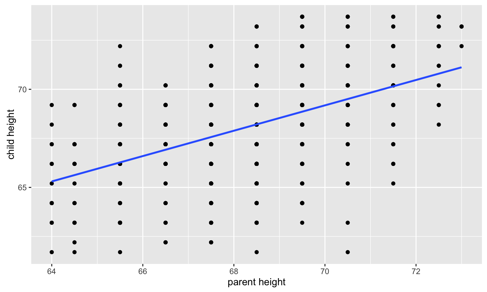
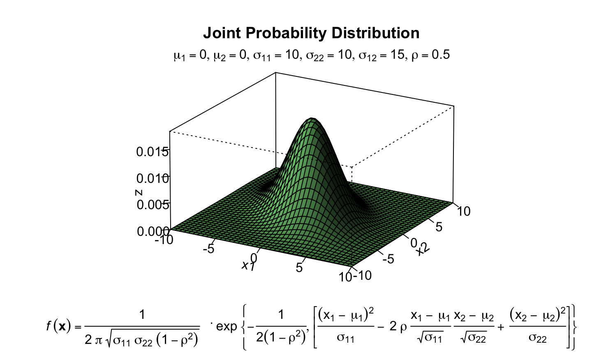
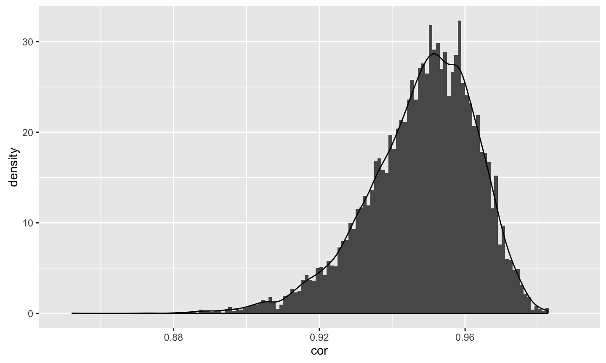
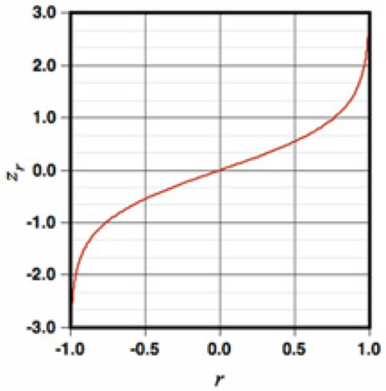

What is the relationship between IV and DV?
- Measuring relationships depend on type of measurement
E.g. chi-square for categorical
January 17, 2017
What is the relationship between IV and DV?
E.g. chi-square for categorical
t.test(y ~ x, data)
Variation (sum of squares) \[ SS = {\sum{(x-\bar{x})^2}} \] \[ SS = {\sum{(x-\mu)^2}} \]
Variance \[ s^{2} = {\frac{\sum{(x-\bar{x})^2}}{N-1}} \] \[ \sigma^{2} = {\frac{\sum{(x-\mu)^2}}{N}} \]
Standard Deviation \[ s = \sqrt{\frac{\sum{(x-\bar{x})^2}}{N-1}} \] \[ \sigma = \sqrt{\frac{\sum{(x-\mu)^2}}{N}} \]
Covariation (cross products) \[ SS = {\sum{{(x-\bar{x})(y-\bar{y})}}} \] \[ SS = {\sum{{(x-\mu_{x})(y-\mu_{y})}}} \]
Covariance \[ cov_{xy}^{2} = {\frac{\sum{(x-\bar{x})(y-\bar{y})}}{N-1}} \] \[ \sigma_{xy}^{2} = {\frac{\sum{(x-\mu_{x})(y-\mu_{y})}}{N}} \]
Correlations \[ r_{xy} = {\frac{\sum({z_{x}z_{y})}}{N}} \]
\[ \rho_{xy} = {\frac{cov(X,Y)}{\sigma_{x}\sigma_{y}}} \]
Many other formulas exist for specific types of data, these were more helpful when we computed everything by hand (more on this later)
Correlations
Correlations 
\[ z = {\frac{\sum{(x-\bar{x})}}{N}} \]
What are the characteristics of z-scores?
\[ H_{0}: \rho_{xy} = 0 \] \[ H_{A}: \rho_{xy} \neq 0 \]

\[ H_{0}: \rho_{xy} = 0 \] \[ H_{A}: \rho_{xy} \neq 0 \]
Test statistic
\[ t = {\frac{r}{SE_{r}}} \] \[ t = {\frac{r}{\sqrt{\frac{1-r^{2}}{N-2}}}} \]
df = N-2
| Drug TX? | Alive | Dead |
|---|---|---|
| Treatment | 65 | 35 |
| No Tx | 35 | 65 |
What is your N?
What is the typical effect size in the field?
Study design?
What is your DV?
Importance (reaction time vs cancer)?
Same method as IV (method variance)?
library(pwr) pwr.r.test(n = , r = .1, sig.level = .05 , power = .8)
## ## approximate correlation power calculation (arctangh transformation) ## ## n = 781.7516 ## r = 0.1 ## sig.level = 0.05 ## power = 0.8 ## alternative = two.sided
pwr.r.test(n = , r = .3, sig.level = .05 , power = .8)
## ## approximate correlation power calculation (arctangh transformation) ## ## n = 84.07364 ## r = 0.3 ## sig.level = 0.05 ## power = 0.8 ## alternative = two.sided

\[ z^{'} = {\frac{1}{2}}ln{\frac{1+r}{1-r}} \]

Steps for computing confidence interval 1. Transform r into z' 2. Compute CI as you normally would using z' 3. revert back to r
\[ r = {\frac{e^{2z'}-1}{e^{2z'}+1}} \]
library(psych) fisherz(r) fisherz2r(z)
-Does the correlation in group 1 differ from the correlation in group 2? \[ H_{A}: \rho_{1} = \rho_{2} \] \[ H_{A}: \rho_{1} \neq \rho_{2} \] -Normally distributed \[ Z = {\frac{z'_{1}-z'_{2}}{se_{z1-z2}}} \]
Which would you rather have? - 1 item final exam versus 30 item? - assessment via trained clinician vs tarot cards ? - fMRI during minor earthquake vs no earthquake?
\[ r_{XX} \]
\[ r_{XY} = r_{X_{T} Y_{T}} {\sqrt {r_{XX} r_{YY}}} \] \[ r_{XY} = .6 {\sqrt {(.70) (.70)}} \] ## Reliability
\[ r_{X_{T} Y_{T}} = = {\frac {r_{XY}} {\sqrt{{r_{XX} r_{YY}}}}} \]
\[ r_{X_{T} Y_{T}} = = {\frac {.30} {\sqrt{(.70)(.70)}}} \] ## Reliability